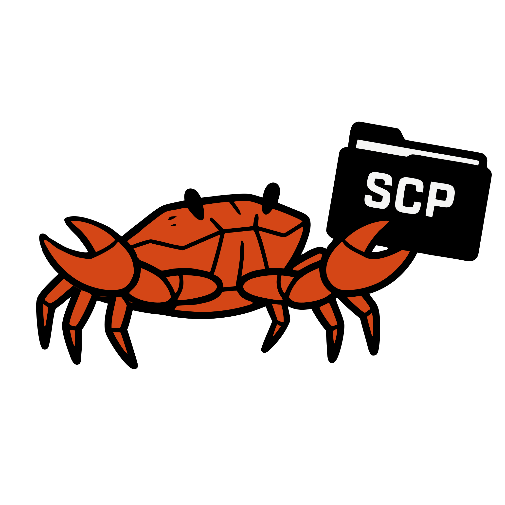

FreeSCP
File-transfer client focused on simplicity and security
About
FreeSCP is a free, open-source, cross-platform SFTP/SCP/FTP/FTPS/WebDAV/SMB client for Windows, macOS and Linux, with a pure-Rust core (russh, russh-sftp, suppaftp, reqwest, smb2) and a Slint-based desktop UI. It also includes an embedded Telnet console (plain TCP and TLS) and a scriptable command-line client for automation and AI agents.
Use FreeSCP as a free, cross-platform alternative to WinSCP, FileZilla and Cyberduck: it is MIT-licensed open source with no paid tier, runs on all three desktop platforms, and speaks SMB and WebDAV in addition to SFTP, SCP, FTP and FTPS.
Features
- Transfer backends
- SFTP
- SCP, with SSH jump hosts and SOCKS5/HTTP-CONNECT proxies
- FTP and FTPS
- WebDAV
- SMB/CIFS (SMB2/SMB3; no SMB1, proxy, or jump-host support)
- Telnet console
- Plain TCP and TLS
- VT100/VT220 terminal with scrollback and copy/paste
- NAWS window resizing and optional auto-login
- SSH connectivity
- SSH jump hosts
- Cloudflare Tunnel hosts via standard
~/.ssh/configProxyCommandentries, e.g.cloudflared access ssh - SOCKS5 and HTTP-CONNECT proxies
- File manager
- Transfer queue
- Integrity verification
- Drag & drop
- Permissions editor
- Remote search
- Site manager
- SSH config import
- Connection history
- Keychain-backed secret storage
- Automatic route selection: save LAN and remote (e.g. Cloudflare Tunnel) routes on one site; FreeSCP probes them, picks the fastest path (LAN preferred), and fails over automatically
- Localizations: English, Spanish, French, Portuguese
Cloudflare Tunnel (cloudflared) support
Servers published through a Cloudflare Tunnel are reached with the standard
OpenSSH ProxyCommand mechanism. Add a line such as
ProxyCommand cloudflared access ssh --hostname ssh.example.com to
the host's entry in ~/.ssh/config and import it from the site
manager: FreeSCP honors the proxy command when opening SFTP/SCP connections
and terminal sessions, with no extra setup inside the app.
Command line
Every release also ships a freescp CLI built on the same core, so
file-transfer workflows can be scripted or driven by an AI agent. It supports
the same protocols (-p sftp|scp|ftp|ftps|webdav|smb), honors
~/.ssh/config (host aliases, ports, identity files,
ProxyJump, ProxyCommand) and verifies SSH host keys
against ~/.ssh/known_hosts.
freescp ls user@example.com:2222 /var/log freescp get user@example.com:2222 /var/log/syslog ./syslog freescp put user@example.com:2222 ./syslog /tmp/syslog freescp stat user@example.com:2222 --json /etc/hosts freescp exists user@example.com:2222 /tmp/backup # exit 0 when present freescp shell user@example.com:2222 # interactive SFTP-style shell freescp console switch.example.com --telnet-tls
Non-interactive use is first-class: passwords come from --password
or the FREESCP_PASSWORD environment variable, --accept-new
enables trust-on-first-use for unknown hosts, and commands such as
stat and exists are designed for scripts and agents.
Shell completions are generated with freescp completions zsh.
Why FreeSCP instead of WinSCP, FileZilla or Cyberduck?
FreeSCP is a free, open-source alternative to the common free SCP/SFTP clients. The differences that matter:
| FreeSCP | WinSCP | FileZilla | Cyberduck | |
|---|---|---|---|---|
| License | MIT (open source) | Proprietary freeware | BSD (open source) | BSD (open source) |
| Windows / macOS / Linux | Yes / Yes / Yes | Yes / No / No | Yes / Yes / Yes | Yes / Yes / Yes |
| SMB/CIFS | Yes (SMB2/SMB3) | No | No | Yes |
| WebDAV | Yes | Yes | No | Yes |
| FTP / FTPS | Yes | Yes | Yes | Yes |
| Telnet console | Yes (TCP and TLS) | No | No | No |
| Command line | Yes, with --json output | Yes (Windows only) | No | Yes (duck) |
| SSH jump hosts | Yes | Yes | Yes | Yes |
| Paid tier or upsells | None | Optional WinSCP Pro; upsell dialog in the free version | Donation prompt | Paid cloud-storage add-ons |
In short: of the common free SCP clients, FreeSCP is the only one that is MIT-licensed, runs on Windows, macOS and Linux, speaks SMB and WebDAV in addition to SFTP/SCP/FTP/FTPS, embeds a Telnet console, and ships a CLI with JSON output — with no paid tier.
Download
Prebuilt binaries — the desktop app and the freescp CLI —
are available from the
GitHub Releases
page for Windows (x86_64, arm64), macOS (x86_64, arm64) and Linux
(x86_64, arm64).
...or build from source:
git clone https://github.com/NOXCIS/FreeSCP.git cd FreeSCP cargo build --workspace cargo run -p freescp-app
Supported protocols
| Protocol | Status |
|---|---|
| SFTP | Supported (SSH jump hosts, cloudflared tunnels) |
| SCP | Supported (SSH jump hosts, cloudflared tunnels, SOCKS5/HTTP-CONNECT proxies) |
| FTP | Supported |
| FTPS | Supported |
| WebDAV | Supported |
| SMB/CIFS | Supported (SMB2/SMB3; no SMB1, proxy, or jump host) |
| Telnet | Supported (plain TCP and TLS console) |
Source Code
FreeSCP is developed in the open. Clone, read, and contribute:
- GitHub: github.com/NOXCIS/FreeSCP
- GitLab: gitlab.com/Noxcis/FreeSCP
Frequently asked questions
Is FreeSCP really free?
Yes. FreeSCP is completely free and open source under the MIT license. There is no paid tier, no feature lock, no ads and no donation prompt.
Is FreeSCP an alternative to WinSCP?
Yes. FreeSCP is a free, open-source alternative to WinSCP that also runs on
macOS and Linux. It supports the same everyday workflow — SFTP and SCP with
SSH jump hosts and ~/.ssh/config import — plus WebDAV, SMB, an
embedded Telnet console and a scriptable CLI, all under the MIT license.
Does FreeSCP have a command-line interface?
Yes. The freescp CLI ships with every release and supports
ls, get, put, mkdir,
mv, rm, stat (with
--json), chmod, chown,
exists, an interactive SFTP-style shell and a Telnet console.
Non-interactive runs are supported with FREESCP_PASSWORD and
--accept-new, which makes it easy to script or to drive from an
AI agent.
Is FreeSCP safe to use?
FreeSCP is open source (auditable code under the MIT license) with a
pure-Rust core. SSH host keys are verified against
~/.ssh/known_hosts — unknown hosts fail closed in non-interactive
runs unless --accept-new is given — and passwords can be stored in
the operating system keychain instead of plain config files.
Which platforms does FreeSCP support?
Windows (x86_64 and arm64), macOS (x86_64 and arm64) and Linux (x86_64 and arm64). Prebuilt binaries are published on the GitHub Releases page; Linux AppImages require glibc 2.35 or newer.
License
FreeSCP is Free Software released under the
MIT License.
Third-party credits are listed in the repository's docs/credits/ directory.
Report an Issue
Found a bug or have a feature request? Please open an issue on GitHub Issues.